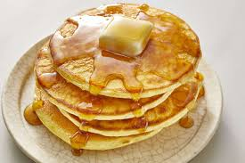
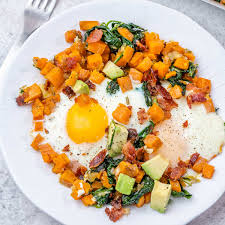

Odin Recipes

Zucchini Bread Pancakes 1.1
I love zucchini, and it's always fun to find new ways to use it. I added my favorite zucchini bread ingredients, cinnamon and vanilla, to a fluffy pancake recipe!

Perfect Pancakes 1.2
Serve these pancakes with butter and syrup, or up the ante with toppings such as sprinkles, chopped bittersweet chocolate, and sliced or chopped fruit for a perfect breakfast.

Sweet Potato Breakfast Hash 1.3
This breakfast hash will get your day off to a great start! Served on a bed of fresh spinach, the sweet potatoes, apples, onions, and bacon make a delicious base for a lightly fried or poached egg. Add another egg, if you’re really hungry!